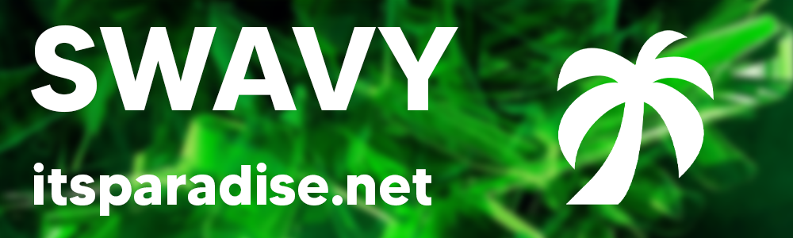

GFX Artist.
I started this career in around late 2020, i have managed to make over 10+ clients be on time with the wright GFX art.
This was started due to lack of GFX artists making art for cheap, So i learnt how to make GFX and sell it for cheap *everything custom*
GFX was made and sent straight to clients to make them happy, No stopping me.
Clients have the ablity to test the GFX art work before bying this how they know if it is worth buying..
I still work on GFX today!
Ownership and Discord server design.
- I worked on ownership since the start of discord.
- - After i worked that out i started making amazing servers.
- - Still doing it today.